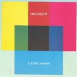
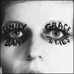

Music Reviews
-

The Orwells Remember When
Five Chicago teenagers follow punk's attitude, rather than the restrictions of its music, to create a stripped-back piece of rebellion against bubblegum pop.
Joe Marvilli returns to high school to review... -

Stagnant Pools Temporary Room
The Indiana duo adhere to a brand of noise pop that is far removed from their expected Midwestern upbringing.
Juan Edgardo Rodríguez salutes those who dare to daydream... -
Fergus & Geronimo Funky was the State of Affairs
Bizarre garage-rock sci-fi concept album from the inimitable Denton, Texas duo.
Stephen Wragg reviews... -
Passion Pit Gossamer
Despite the wash of brilliant synths and extravagant pop construction, Gossamer takes us on a much darker and more intensely crafted trip through Passion Pit caretaker Michael Angelakos's frame of mind.
Joshua Pickard has to shade his eyes to review... -
Redd Kross Researching The Blues
After 15 years, Redd Kross are back with a high-octane taste of power pop, a bit more punk than blues but more fun than anything else.
Forrest Cardamenis gets to work... -

Frank Ocean Channel ORANGE
To prevent illegal downloads and streams, Ocean released Channel ORANGE a week earlier than originally planned. Now we've had time to live with it, do we still have reservoir-ations, or do we lake what we sea?
Continuing the water theme, Joe Rivers reviews... -

Opossom Electric Hawaii
New Zealander Kody Nielson debuts his neo-psychedelic pop outfit Opossom. However, for all the love of psychedelic rock, does Opossom ever kick it into interstellar overdrive?
David Hogg reviews... -
Twin Shadow Confess
In case you haven't had enough of the retro new wave sound, Twin Shadow is here with a sophomore album that by far surpasses his debut. But how does it compare to the rest of the heavy-hitting 80s revivalists of the past decade?
David Hogg reviews... -

Family Band Grace and Lies
Family Band creates an album of haunting contradictions that can somehow be comforting and uncomfortable at the same time.
Joe Marvilli finds a cloudy evening to review... -

Jeremiah Jae Raw Money Raps
The Chicagoan emcee's first full length under the Brainfeeder label wraps up an assortment of sample-based hip hop in a proggy state of musical bewilderment.
Juan Edgardo Rodríguez is a frugal spender...